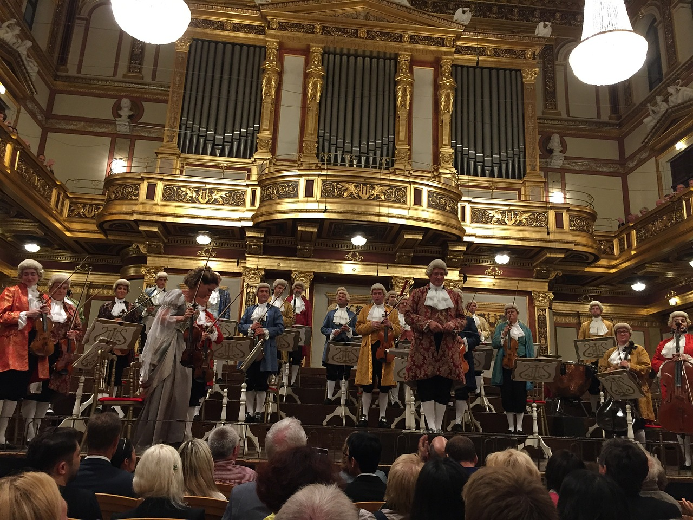

NOWA DEFINICJA SZTUKI
W Teatrze Ethereal nie tylko przekraczamy granice klasycznej sztuki, ale także kreujemy nową definicję tego, co teatralne. Nasze sceny pulsują życiem, a każdy spektakl to unikalna opowieść, która kształtuje wspólną przestrzeń sztuki. Dołącz do naszej teatralnej rewolucji, gdzie tradycja spotyka się z innowacją, a emocje stają się nieograniczoną formą wyrazu. Ethereal - tam, gdzie sztuka ożywa w nowy, niezwykły sposób.
536 lat
funkcjonowania
Przez 536 lat Teatr Ethereal zachowuje tradycję teatralną i niepowtarzalny charakter, który wdziera się w serca pokoleń.
132 mln
sprzedanych biletów
To nie tylko liczba. To wynik pasji i zaangażowania naszej widowni, która wspólnie z nami podróżuje przez fascynujący świat sztuki.
13 000 +
unikalnych spektakli
Ponad 13000 unikalnych spektakli odsłoniło przed widzem niekończący się świat narracji, interpretacji, artystycznych eksperymentów.
DZIEDZICTWO

HISTORIA
Początki naszego działania sięgają XVI wieku
Założyciele
Zabór pruski
II Wojna Światowa
Historia teatru Ethereal sięga głęboko w XVI wiek. Początki naszego działania mają swoje korzenie w tym doniosłym okresie, gdy pierwsze teatralne przedstawienia zaczęły kształtować krajobraz kulturalny Krakowa. Artystyczna pasja i zmysłowa interpretacja sztuki przyciągały publiczność, ustanawiając teatr Ethereal jako pioniera sztuki widowiskowej w regionie. Od tamtego momentu teatr nieprzerwanie ewoluował, dostosowując się do zmieniających się trendów. Dzisiaj z dumą kontynuujemy tę tradycję, tworząc unikalne doświadczenia, które przenoszą publiczność w magiczny świat sztuki.
DOŚWIADCZENIE

OSIĄGNIĘCIA
Królowie, Politycy, Nobliści
Królowie
Politycy
Nobliści
Osągnięcia teatru Ethereal są wybitne, a na scenie występowali nie tylko utalentowani aktorzy, ale również prominentne postacie społeczne. Królowie, politycy i nobliści znaleźli swoje miejsce w historii teatru Ethereal, przyczyniając się do jego rozkwitu i prestiżu. Nasza scena była świadkiem wyjątkowych wystąpień królewskich, gdzie władcy zasiadali w widowni, oddając się magii teatralnego przedstawienia. Politycy korzystali z naszego teatru jako platformy do ważnych wystąpień, podkreślając znaczenie sztuki w przekazywaniu istotnych przesłań społecznych.
UMIEJĘTNOŚCI

WARSZTAT
Mistrzostwo przekazywane od pokoleń
Dziedzictwo
Szkolenia
Innowacje
W warsztacie teatru Ethereal od wieków praktykowane jest mistrzostwo, które przekazywane jest z pokolenia na pokolenie. Nasza tradycja opiera się na głębokim szacunku do sztuki teatralnej i dziedzictwa, które wpisuje się w naszą historię. Mistrzostwo przekazywane od pokoleń widać w precyzji każdego ruchu aktorskiego, w mistrzowskim opanowaniu dialogów i w zdolności do przenoszenia publiczności w inne światy. W naszym warsztacie kładziemy szczególny nacisk na rozwijanie talentów, nieustannie inspirując się tradycją i doskonaląc techniki teatralne.
al. Adama Mickiewicza 30, 30-059 Kraków
Odwiedź nas przy malowniczej alei Adama Mickiewicza i zanurz się w wyjątkowej atmosferze sztuki i kultury!
Godziny otwarcia
poniedziałek - piątek: 16:00 - 24:00
sobota - niedziela: 10:30 - 24.00

REPERTUAR
Repertuar teatru Ethereal to mistyczna mieszanka klasycznych arcydzieł teatralnych i nowatorskich dzieł współczesnych. Nasza scena żyje różnorodnością, prezentując widowiska, które poruszają dusze, zdobywając uznanie zarówno miłośników klasyki, jak i poszukiwaczy nowych artystycznych doświadczeń.
Ścieżki zapomnianych marzeń
Autor:
Jan Brzechwa
Reżyser:
Agata Bęczyńska
Premiera:
25.01.2024
W spektaklu "Ścieżki Zapomnianych Marzeń" ożywają zapomniane marzenia w atmosferze pełnej romansu, komedii i wzruszeń. Główna bohaterka, zagubiona w codzienności, przypadkowo odkrywa skrzynię starych listów, która prowadzi ją ścieżką do zapomnianych marzeń młodości. W miarę jak przeszłość splata się z teraźniejszością, widzowie są świadkami wybuchu uczuć, pełnych humoru sytuacji oraz wzruszających momentów.
Nadchodzące terminy
15:30
25 stycznia
17:30
25 stycznia
19:00
25 stycznia
17:30
27 stycznia
18:30
29 stycznia

Czas burzowych serc
Autor:
Alicja Dzwonnicka
Reżyser:
Robert Gracz
Premiera:
29.01.2024
W "Czasie Burzowych Serc" rozwija się pełna humoru i ciepła opowieść rodzinna, która przenosi widzów w świat zabawnych perypetii i niezapomnianych chwil. Główna postać, głową pełną marzeń, staje przed zadaniem rozwiązania rodzinnych konfliktów, prowadząc do szalonych sytuacji i śmiechu. Komediowy chaos miesza się z emocjonalnym ciepłem, ukazując, jak czasem burze w życiu rodziny mogą przynieść nieoczekiwane, radosne zmiany.
Nadchodzące terminy
15:30
29 stycznia
19:30
29 stycznia
17:30
30 stycznia
17:30
31 stycznia
20:30
31 stycznia

Szeptane tajemnice miasta
Autor:
Adam Dowbor
Reżyser:
John Doe
Premiera:
05.02.2024
W "Szeptanych Tajemnicach Miasta" rozwija się niezwykły thriller, będący prawdziwym przebojem pełnym zaskakujących zwrotów akcji. Główny wątek prowadzi widzów przez mroczne zakamarki miejskiej rzeczywistości, gdzie tajemnicze szepty ukrywają najgłębsze sekrety. Spektakl kipi napięciem, a zaskakujące wydarzenia snują widzów przez intrygujące wątki, których rozwiązanie pozostaje nieprzewidywalne.
Nadchodzące terminy
17:30
5 lutego
19:30
5 lutego
15:30
10 lutego
17:30
10 lutego
20:30
12 lutego
A TO DOPIERO POCZĄTEK
Zapraszamy do magicznego światła kuluarów teatru Ethereal, gdzie każde zdjęcie opowiada historię, przynosząc widzom wrażenia z zakulisowych przygotowań i niepowtarzalnych chwil przedstawień.


+12
więcej
RECENZJE
Teatr Ethereal to nie tylko miejsce sztuki, ale także przestrzeń, gdzie Twój głos ma znaczenie. Dlatego z ogromną radością prezentujemy dział "Recenzje", gdzie to właśnie Ty, nasz szanowny widz, możesz podzielić się swoimi myślami, emocjami i refleksjami na temat naszych spektakli.
REKOMENDACJE GOŚCI
Rekomendacje Gości to dla nas nie tylko zaszczyt, lecz także potwierdzenie, że teatr Ethereal oferuje niezapomniane doświadczenia sceniczne, które pozostawiają głębokie, pozytywne wrażenia w sercach naszej publiczności.

Elon Musk
CEO SpaceX, CEO Tesla
Spektakularna prezentacja sztuki teatralnej w Teatrze Ethereal, zachwycająca każdego miłośnika scenicznych emocji.
Luty 2023
Conor McGregor
Laureat Nagrody Nobla z Fizyki
Teatr Ethereal - miejsce niezwykłych wrażeń artystycznych, które trwają w pamięci na zawsze.
Sierpień 2023
Bill Gates
Co-founder Microsoft
Emocje na scenie Teatru Ethereal wykraczają poza granice oczekiwań, tworząc magiczną atmosferę każdego przedstawienia.
Listopad 2023
David Beckham
Były piłkarz
Teatr Ethereal to prawdziwe arcydzieło kultury, oferujące niezapomniane doznania w każdym wyrazie artystycznego wydarzenia.
Grudzień 2023AKTUALNOŚCI
W naszym dziale aktualności otwieramy dla Ciebie kurtynę na najświeższe wydarzenia i kulisy życia Teatru Ethereal. Bądź na bieżąco z premierami, ekskluzywnymi wywiadami z twórcami oraz doniesieniami z teatralnych festiwali. Odkryj tajniki przygotowań do nowych spektakli i śledź, jak nasza scena ewoluuje, by zaskoczyć Cię jeszcze bardziej.

Fotografia: Jan Kowalski
10 stycznia 2024
Autor: Adam Nowak
Ekskluzywna premiera "Lustra Dusz" - 12 lutego!
Trzymajcie się mocno, bo już 12 lutego zapraszamy Was na niezapomnianą podróż przez ludzką duszę w spektaklu "Lustro Dusz". Bądźcie z nami na tej wyjątkowej premierze i uczestniczcie w spotkaniu z twórcami tuż po spektaklu!

Fotografia: Joanna Zając
13 stycznia 2024
Autor: Rafał Królikowski
Spotkanie z Aktorem Roku - już 3. lutego!
Z dumą ogłaszamy specjalne wydarzenie - spotkanie z Aktorem Roku w Teatrze Ethereal! Dołącz do nas 3 lutego o godzinie 19:00, by osobiście poznać artystę, który wzbudził najwięcej emocji w minionym roku. Rozmowy, autografy i wiele więcej!

Fotografia: Anna Kowal
20 stycznia 2024
Autor: Rafał Królikowski
Letni Festiwal Teatralny
Z radością informujemy, że już teraz możesz zacząć oznaczać kalendarz! Nasz Letni Festiwal Teatralny odbędzie się w dniach 5-10 lipca. Z przyjemnością podzielimy się z Tobą szczegółowym programem w najbliższych tygodniach. Oczekuj niesamowitych przeżyć teatralnych!
Współprace
Dokumenty
© Ethereal 2024 all rights reserved
Weronika Sławacka 415860
Kacper Książek 417564
Techniki Internetowe 2023/2024 IiAD grupa 5.